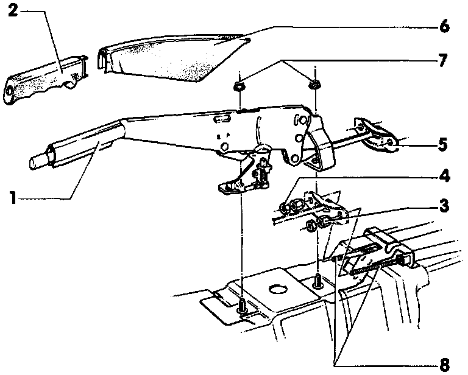

Parking Brake Lever: Service and Repair
Parking Brake Lever AssemblyExploded View Of Parking Brake Lever Assembly:

For service operations refer to exploded view as a guide during disassembly and assembly.
1. Parking brake lever
Different version for rear drum and rear disc brakes
2. Hand grip
Pull down locating tab under hand grip and pull forward to remove
3. Adjusting nut
For drum brake vehicles refer to Adjustments
For Disc brake vehicles refer to Adjustments
4. Lock nut
To lock adjusting nut -3- in position.
5. Compensator
6. Parking brake lever trim
First pull off hand grip -2-, then pull trim forward
7. Hex nut
8. Parking brake cable
Different versions for rear drum and rear disc brakes